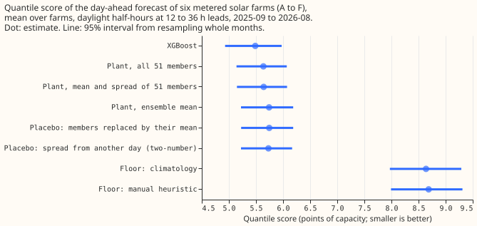
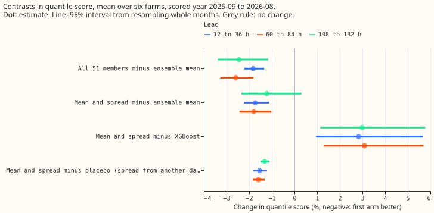
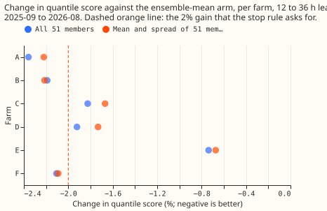
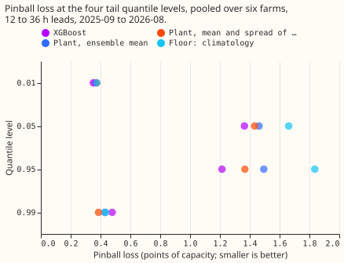

Does the two-number summary of the 51 ensemble members forecast a metered solar farm day ahead as well as XGBoost?
The 51 members of the weather ensemble help a single metered solar farm's day-ahead forecast only a little, and two numbers per half-hour carry nearly all of that help. NGED meters the output of six solar farms in its trial area, which this page labels A to F. We passed each of the 51 members of the European Centre for Medium-Range Weather Forecasts (ECMWF) ensemble forecast through a solar-farm power model, called "the plant" below. The plant has south-facing panels at 35 degrees tilt and one fitted scale per farm, so each half-hour gets 51 plant outputs, one per member. We built three forecasts: one from the plant fed the ensemble mean, one from all 51 plant outputs, and one from only the mean and standard deviation of the 51 plant outputs (the "two-number" forecast). We scored them on daylight half-hours, 12 to 36 hours after the weather forecast was issued, in 2025-09 to 2026-08. The score is the quantile score: twice the mean pinball loss over 11 quantile levels. The comparison is an XGBoost (Chen and Guestrin, 2016) model fitted on the same weather. The plant's scale and all other fitted numbers come from the months before the scored year. The two-number idea comes from experiment 193, which tested it on Primary substations (the substations that feed local distribution networks), and the code for passing members through a model from experiment 187.
The prediction partly holds, and the stop rule fires: the members gain under 2% at three of the six farms. The quantile score (in points of capacity) is 5.74 for the plant fed the ensemble mean, 5.64 for the two-number forecast, 5.64 for the plant fed all 51 outputs, and 5.49 for XGBoost. All 51 members lower the score by 1.8% (95% interval 1.3% to 2.2%). The two numbers alone lower it by 1.7% (1.1% to 2.2%). That is a retained share of 0.95 (0.84 to 1.02), which passes the 80% rule. The gain is under 2% at three farms (C, D, and E), so this page reports the result without a further arm. The MAE of the median is within 5% of XGBoost's (9.99 against 9.87 points of capacity, 1.2% higher). The pinball loss at the 0.99 quantile is lower than XGBoost's (0.386 against 0.478), but at the 0.01 quantile it is higher (0.374 against 0.352). The prediction therefore holds at the 0.99 quantile and fails at the 0.01 quantile.




Numbers
- Arms and schedule. One plant shape shared by all six farms, with one fitted scale and one ceiling (the 99.5th percentile of tuning output) per farm; no per-farm plant, because experiment 218 found that per-farm parameters raise the fraction of output explained by only 0.003. One fit on the tuning months before the scored year, no refit in the scored year, for the plant scale, the offsets, and XGBoost (150 rounds, eta 0.15, depth 5, no column subsampling, no calendar columns). Offsets are the 11 residual quantiles of the tuning months in four bins of the forecast. The offset factor and spread factor are shared and fitted leave-one-farm-out on the other five farms' tuning rows.
- Weather. ECMWF ensemble (51 members), 00 UTC run, at the nearest 0.25 degree cell; every half-hour takes the run whose lead is 12 to 36 hours (also 60 to 84 and 108 to 132 hours as secondary bands). Each of these weather runs is available at forecast time. The manual heuristic reads only observed power from 7 or more days earlier, which is also available at forecast time. The ensemble store starts on 2024-04-01, so tuning is April 2024 to August 2025 for the scored year.
- Rows. Scored year 2025-09 to 2026-08: 41,654 daylight half-hours per lead band that every arm holds, six farms. Replicate (2025-03 to 2025-08, tuning 2024-04 to 2025-02): 23,782 half-hours.
- Quantile score, 12 to 36 h, scored year (95% interval): XGBoost 5.49 (4.93 to 5.97); all 51 members 5.64 (5.14 to 6.07); mean and spread 5.64 (5.15 to 6.07); ensemble mean 5.74 (5.22 to 6.19); climatology 8.64 (7.97 to 9.29); manual heuristic 8.69 (7.99 to 9.31).
- Contrasts, 12 to 36 h, scored year: C0 (members minus ensemble mean) -1.82% (-2.21 to -1.34); C1 (mean and spread minus ensemble mean) -1.73% (-2.23 to -1.12); retained share 0.95 (0.84 to 1.02); C3 (mean and spread minus XGBoost) +2.83% (+0.95 to +5.67); mean and spread against the manual heuristic -35.0% (-37.7 to -32.5), against climatology -34.7% (-39.6 to -30.3).
- Controls. The placebo that gives the two-number arm the spread of another day (same farm, month, hour band, and forecast bin) scores 5.73, so the real spread beats it by 1.54% (1.22% to 1.83%); the same for all 51 members is 1.47% (1.26% to 1.67%). The placebo that replaces the 51 outputs by their mean scores 5.75, within 0.1% of the ensemble-mean arm. In these six farms and 12 scored months, the members' gain is distinguishable from zero, and small. The night placebo was not run (see the plan).
- Lead bands. At 60 to 84 hours the members gain 2.59% (1.81% to 3.28%) and the mean and spread keep 0.69 (0.55 to 0.76) of that; at 108 to 132 hours the gain is 2.44% (1.16% to 3.38%) and the share 0.50 (-0.25 to 0.70). XGBoost remains better than the two-number arm at both (about 3%).
- Replicate (2025-03 to 2025-08, shorter tuning). The members gain 1.32% (1.08% to 1.87%) at 12 to 36 h with a retained share of 0.87 (0.58 to 1.01). XGBoost is 5.2% worse than the two-number arm (interval -6.2% to +4.7%), the reverse of the scored year, which may be because its tuning window is only 11 months.
- Per farm, gain of all 51 members over the ensemble mean at 12 to 36 h: A 2.36%, B 2.19%, C 1.83%, D 1.92%, E 0.74%, F 2.11%. Leaving one farm out leaves the gain at 1.72% to 2.08% and the retained share at 0.94 to 0.96, so no farm flips a contrast.
- Tail calibration, 12 to 36 h, pooled over farms (coverage at the level; pinball in points of capacity): the two-number arm covers 3.2%, 5.5%, 96.3%, and 99.1% at the 0.01, 0.05, 0.95, and 0.99 levels (pinball 0.374, 1.432, 1.367, 0.386); XGBoost 3.3%, 6.8%, 95.6%, and 99.6% (0.352, 1.364, 1.214, 0.478); the ensemble-mean arm 3.3%, 6.3%, 94.9%, and 98.7% (0.366, 1.462, 1.494, 0.428).
- Curtailment value. Not scored. The pilot set of
studies.node_curtailmentholds four nodes and scores a few events at the scaled limit, so it shows the arithmetic and cannot rank forecasts; this experiment did not map the six farms to those nodes.
Checks
- Median minus mean forecast per farm (points of capacity, 12 to 36 h): the two-number arm +0.27 to +0.48, the ensemble-mean arm +0.64 to +0.91, XGBoost -0.48 to +0.02 (the mean forecast is the weighted mean of the 11 quantiles). Adding the spread roughly halves the gap between the median and the mean forecast but does not remove it.
- Mean-forecast error beside each quantile-score contrast. The quantile score improves by 1.7% from the ensemble-mean arm to the two-number arm, while the MAE of the mean forecast worsens from 10.13 to 10.20 points and the MAE of the median is unchanged (9.95 to 9.99). The members appear to change the width of the forecast distribution, not its centre; XGBoost's MAE of the mean is 10.23, the worst of the three, while its quantile score is the best.
- Triggers fired. Trigger 3 fires (quantile score and the MAE of the mean forecast point in different directions). The explanation, that members sharpen the spread and not the location, is supported by the unchanged median MAE and by the placebo that gives the real spread a 1.5% advantage over a spread from another day. No Opus audit was run, because the ML manager ruled one out to save quota, so no independent reader has re-derived the headline contrasts. Triggers 1, 2, 4, and 5 did not fire: the controls behave (the rescale placebo changes the score by 0.1%, the shuffles lose most of the gain), the leave-one-farm-out checks keep every sign, and no nested arm beats the arm that contains it. Trigger 6 does not apply, because no sister experiment on the same rows exists. Trigger 7 fires: the planned hybrid neural head for the metered farms takes the two ensemble numbers as inputs, and this result has not been replicated.
- Caveats. The offset factor
fand spread factorsare fitted on tuning rows whose offsets were estimated on the same rows. That makes the fit optimistic for every plant arm, by an amount we did not measure. The ceiling and scale are fitted on the ensemble-driven tuning rows, not on past weather. XGBoost gets one fit and no refit, and 17 months of tuning data; the replicate reverses its lead. Farm E has 10 months of tuning data in the scored year and the smallest gain. The floors were re-implemented from their definitions (13 earlier powers; month, half-hour, and weekend cells pooled over neighbouring cells) and not run throughBaseForecaster. The scored year has 12 months, and resampling so few months gives intervals close to the full range of the monthly results. Figures were drawn from the scoring tables; the SVG files were optimised but not visually inspected in the built site.
What the next experiment should answer
- Does an XGBoost model that is given the plant's mean response and the members' spread as input columns beat both the plant forecast and plain XGBoost? The two families win at different quantile levels. That makes a combination plausible.
- Does the plant's advantage at the 0.99 quantile (0.386 against 0.478) persist when XGBoost is refitted weekly instead of fitted once?
Plan amendments (made before scoring)
- Supported rule. The retained share must be at least 0.8 as a point estimate, and the interval of C1 must lie wholly below zero; the share's own interval is reported beside it, and the plan's wording "excludes 0.8 from below" is dropped as too strict for 12 monthly blocks.
- Replicate. The ensemble store starts on 2024-04-01, so the replicate scores 2025-03 to 2025-08 (six months), with tuning from 2024-04.
- Quantile score is twice the mean pinball loss over the 11 levels of
studies.ens_members, in points of capacity; MAE is of the median forecast; the mean forecast in the Checks is the 11-level weighted mean.
Data-processing note
Experiment 268 found crossing quantiles in 26,344 of its 77,897 generator-forecast rows (34%), but all of them belong to three generators that are not solar farms, so none is on this page. Experiment 273 counted 0 crossing rows in every arm here, because the fit scripts sorted the 11 quantiles before writing them, so sorting does not change the scores on this page.